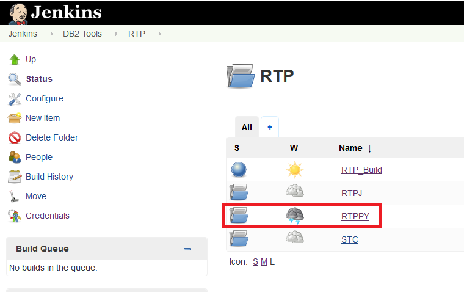
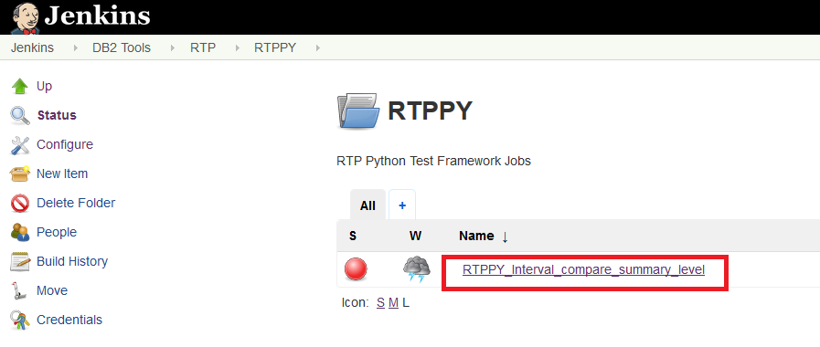
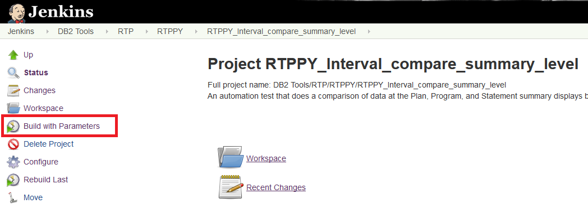
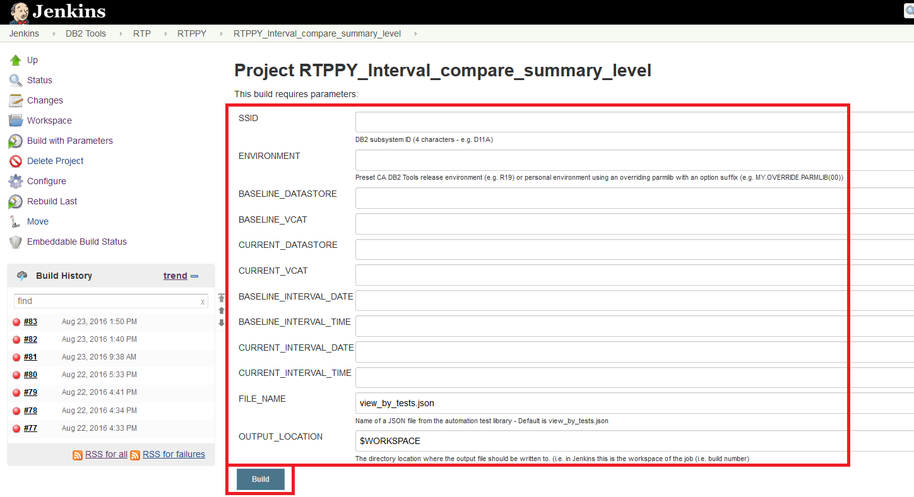

Executing via Jenkins
These instructions are not encompassing and only cover the simple way of executing and the minimum of changing the Build section of the configuration to alter the tests parameters when needed.
Step 1: Start by navigating to the RTP folder in Jenkins and selecting the RTPPY folder.

Step 2 - Select the test you want by clicking on its name.

Step 3 - Click Build with Parameters

Step 4 - Fill in parameters and click Build
Note When filling in Build Parameters do not use any quotes (i.e. ' ' or " ") 
That's all there is to it! See the tutorial on how to view and/or download the output